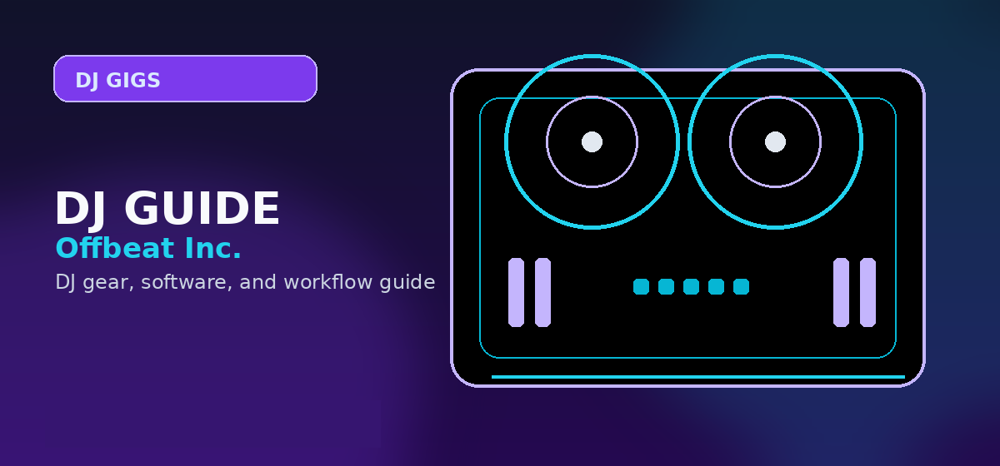

How to Get DJ Gigs in 2026: Booking Clubs, Events, and Career Growth Tips
Comprehensive guide to how to get DJ gigs booking clubs events 2026 career tips promotion with practical recommendations and current buying notes — updated 2026.

Disclosure: This page uses affiliate links. We may earn a commission at no extra cost to you. Full disclosure →
Breaking into the DJ scene in 2026 requires more than just a great ear for music; it demands a strategic approach to personal branding and professional networking. The landscape has shifted from simply "playing the hits" to offering a curated experience. Whether you are aiming for the strobe lights of a midnight club set or the high-stakes environment of a corporate gala, the barrier to entry has lowered technically, but the competition for attention has intensified. To secure consistent bookings, you must position yourself as a solution to a venue's problem—whether that is increasing foot traffic, maintaining a specific atmosphere, or providing seamless entertainment. This guide outlines the essential steps to move from the bedroom to the booth, blending modern promotional tactics with the foundational gear needed to execute a professional performance on a budget.
Building a 2026-Ready Digital Brand
In 2026, your social media profile is your primary resume. Club managers and event planners rarely ask for a CV; they ask for your Instagram or TikTok. Focus on "micro-content"—15 to 30-second clips of high-energy transitions or unique remixes that showcase your technical skill and ability to read a crowd. Beyond social media, you need a streamlined Electronic Press Kit (EPK). Your EPK should be a single-page site or a polished PDF containing a high-resolution press photo, a brief bio focusing on your "vibe" or genre specialty, and embedded mixes from SoundCloud or Mixcloud. The goal is to reduce friction for the booker; if they have to search for your music, you’ve already lost the gig.
The Art of the Approach: Booking Clubs
Landing your first club gig is rarely about cold-emailing a general "info@" address. It is about physical presence and relationship building. Start by attending the venues you want to play, supporting the current residents, and becoming a familiar face to the staff. When you finally approach a promoter, don't ask for a "chance"; instead, offer a value proposition. For example, mention your following in a specific local subculture or your ability to play a niche genre that fills a gap in their current rotation. Propose a "warm-up" slot—the opening hour where the pressure is lower—to prove your reliability and ability to build a room's energy without overplaying your hand too early.
Diversifying Income with Private Events
While club gigs provide prestige, private events—weddings, corporate parties, and luxury lounges—provide the financial stability to grow your career. The 2026 event market prizes versatility. A "wedding DJ" is no longer just a playlist operator; they are an event coordinator. To break into this sector, create a separate promotional wing of your brand that emphasizes professionalism, punctuality, and a wide musical range. Networking with local event planners and photographers is the fastest way to get referrals. These gigs often pay three to five times more than a club slot, allowing you to reinvest in higher-end equipment and professional marketing without relying solely on the volatile nightlife economy.
The "Starter Kit" Strategy: Reliable Gear on a Budget
You cannot book professional gigs if your setup is prone to crashing or sounds amateur. However, you don't need a $5,000 ride to start. In 2026, entry-level hardware has evolved to include pro-level features like touch-capacitive jogs and integrated audio interfaces. The key is to invest in "reliable minimalism." Start with a controller that is industry-standard in its layout so you can easily transition to club-standard CDJs. Pair this with high-isolation headphones to ensure you can cue tracks accurately in loud environments. By keeping your initial overhead under $300, you reduce your financial risk while maintaining a professional output that allows you to focus on your performance rather than your technical limitations.
Recommended Entry-Level Gear for New DJs
| Product | Est. Price | Pros | Cons |
|---|---|---|---|
| Hercules DJControl Inpulse 200 MK2 | $179 | Built-in beat-matching guide; very portable. | Plastic build; basic jog wheels. |
| Pioneer DJ DDJ-200 | $249 | Industry-standard layout; great for beginners. | Lacks some advanced FX controls. |
| Audio-Technica ATH-M20x | $49 | Accurate sound; durable for gigging. | Less bass punch than pro models. |
| Mackie Thump Go (Compact) | $299 | Battery powered; loud enough for small events. | Heavy to transport alone. |
Quick Verdict
If you are just starting, prioritize brand visibility and networking over expensive gear. Use the Hercules InPulse 200 MK2 and ATH-M20x headphones to build your first few mixes and local reputation. Once you secure your first three paid private events, reinvest those profits into industry-standard Pioneer gear to make the jump into professional club environments.
To get started with your own professional setup, check out our recommended gear via the affiliate links below to find the best current deals on 2026's top budget controllers and audio equipment.
Action plan: Record a 30-minute mix, upload to Mixcloud with genre tags, reach out to 10 local bars with a rate card and your Mixcloud link. Target corporate events and private parties for paid gigs faster -- less competition, higher budgets. Play three free gigs to build a local reputation, then charge for the fourth. Search audio interfaces for recording DJ mixes on Amazon →
Shop on Amazon
Get gig-ready gear on Amazon — bags, cases, and accessories for working DJs.
Pro Tips Before You Decide
- Use free trials fully — spend the entire trial period on the specific workflow you plan to use long-term, not just exploring features
- Check recent reviews — software and gear receive regular updates; look for reviews or Reddit posts from the last 3-6 months
- Budget for accessories — cables, stands, carrying cases and replacement pads/needles add 10-20% on top of the main purchase price
- Join the community early — getting active in subreddits and Discord servers before purchasing gives you direct access to current owner feedback
- Plan your setup holistically — whichever product you choose, make sure it integrates cleanly with the rest of your gear and software ecosystem
Frequently Asked Questions
How do beginner DJs get their first paid gig?
Start locally: bars, private events, and house parties. Offer to play for free at first to build reputation. Post a mix online, create a simple website or Instagram, and let venue managers hear your sound.
How much should a beginner DJ charge?
Beginner DJs typically charge $50–$150 for small events. Mid-level DJs charge $200–$500 for weddings and corporate events. Establish your rate based on local market rates and your skill level.
Do DJs need an agent?
Not initially. Most DJs get early gigs through personal networking. Booking agents become valuable once you're established and handling too many inquiries to manage yourself.
What should a DJ's demo mix include?
A 30–60 minute recording showcasing your mixing style, genre range, and personality. Include well-known tracks mixed with your own edits or selections that show taste and DJ identity.
How do you stand out as a new DJ?
Build a strong social media presence, have a consistent brand, create quality mixes regularly, and specialize in a specific sound. DJs with a clear identity and niche get remembered.